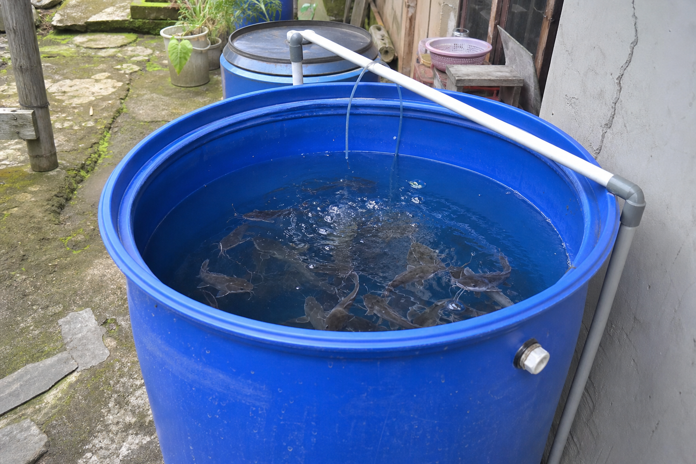
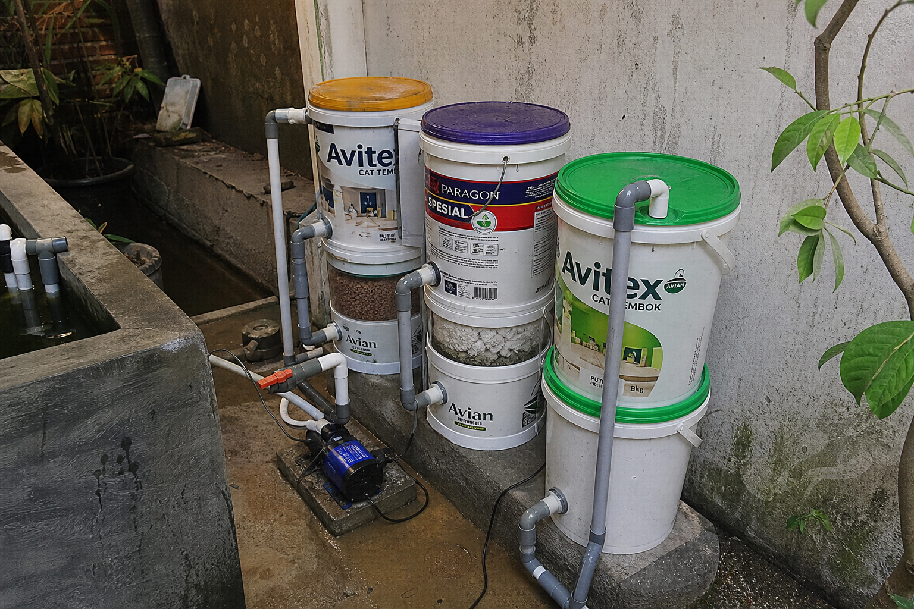
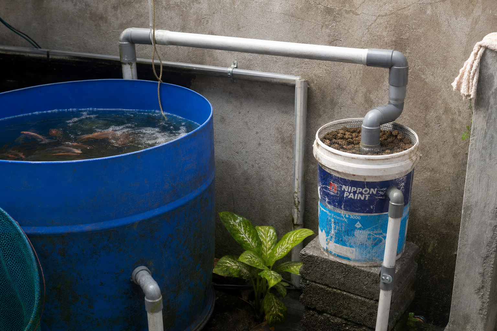
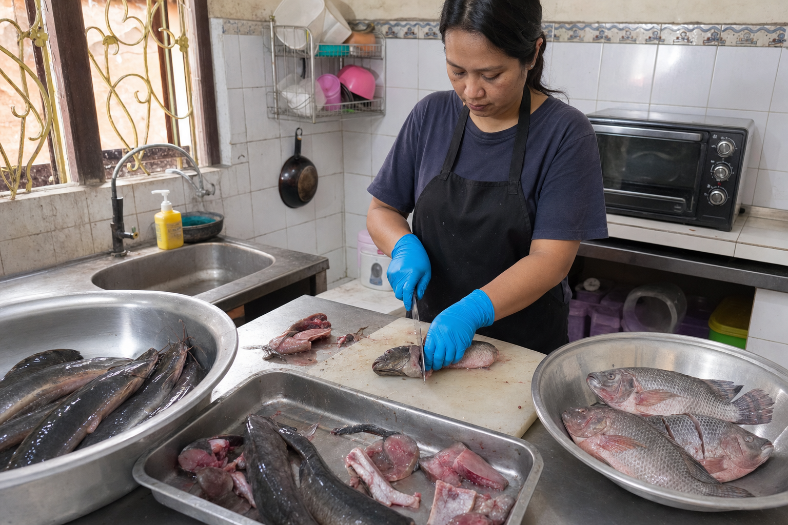
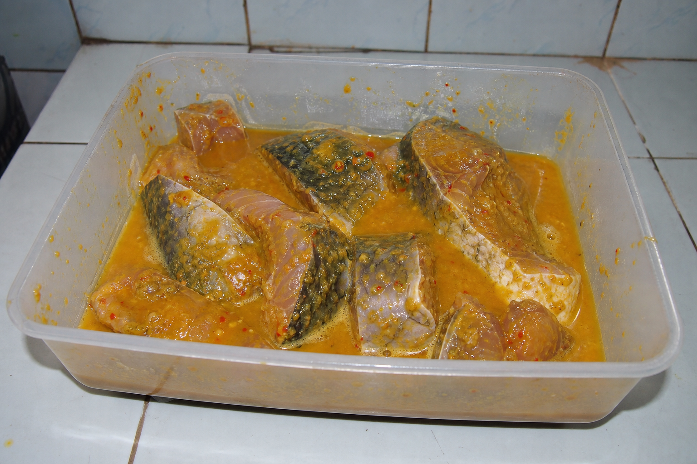
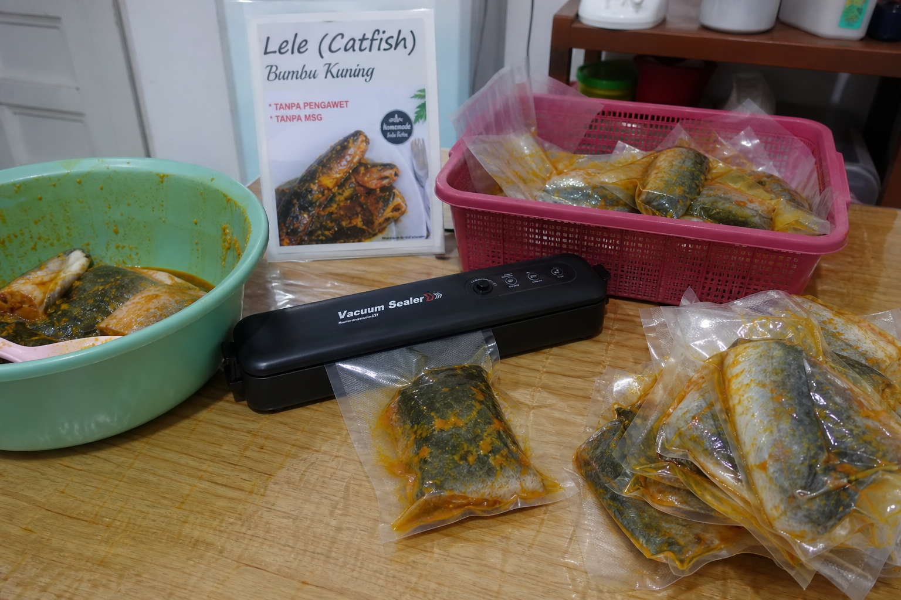

Ikan lele dan nila pilihan dibudidayakan dengan sistem RAS, diproses secara bersih, dibumbui dengan marinasi khas, lalu dikemas vacuum agar rasa tetap meresap dan kualitas lebih terjaga.
Ikan lele & nila dibesarkan di drum 200 liter dengan sirkulasi air sederhana
Ikan dipilih berdasarkan ukuran, kondisi, dan kualitas daging
Bumbu meresap merata untuk rasa yang konsisten saat dimasak
Dikemas rapat agar lebih higienis, rapi, dan praktis disimpan
Produk kami dibuat dari ikan lele dan nila yang dibudidayakan dengan sistem RAS skala rumahan — menggunakan drum 200 liter sebagai kolam ikan dengan sirkulasi air sederhana. Setelah panen, ikan diproses, dimarinasi, lalu dikemas vacuum untuk kebutuhan rumah tangga, reseller, dan dapur usaha.
Sistem drum 200 liter dengan sirkulasi air sederhana menjaga kualitas air lebih stabil
Sudah dibumbui dan dikemas per porsi, cocok untuk goreng, bakar, atau air fryer
Meminimalkan udara di dalam kemasan agar produk lebih higienis dan mudah disimpan






Dua varian ikan air tawar favorit yang sudah dibersihkan, dibumbui, dan dikemas vacuum agar lebih praktis untuk stok lauk harian.
Potongan lele pilihan dari budidaya RAS rumahan, dibersihkan, diberi bumbu marinasi, lalu dikemas vacuum. Cocok untuk menu rumahan, frozen stock, katering, atau reseller.
Nila segar dengan tekstur daging yang lembut, diproses higienis dan dimarinasi untuk rasa yang meresap. Praktis untuk menu sehat keluarga maupun kebutuhan dapur usaha.
Produk ikan marinasi skala rumahan yang praktis untuk dimasak, dari budidaya drum 200 liter hingga kemasan vacuum.
Ikan dari drum 200 liter — sistem sederhana tapi terkontrol.
Bumbu sudah meresap sehingga pelanggan tinggal memasak tanpa perlu proses persiapan yang lama.
Packaging rapat membantu menjaga kebersihan produk, mengurangi kontak udara, dan membuat tampilan lebih profesional.
Cocok untuk digoreng, dibakar, dimasak air fryer, atau dijadikan stok lauk harian di freezer.
Produk mudah disimpan, mudah dipajang, dan cocok untuk penjualan retail maupun paket langganan.
Formula marinasi dibuat seragam agar pengalaman makan pelanggan tetap stabil di setiap pembelian.
Proses sederhana skala rumahan — dari budidaya di drum 200 liter hingga produk marinasi siap jual.
Lele & nila dibesarkan di drum 200 liter dengan sirkulasi air sederhana.
Ikan dipilih, dibersihkan, dan disiapkan sesuai standar produk siap olah.
Bumbu diaplikasikan secara merata agar rasa lebih meresap dan konsisten.
Produk dikemas vacuum, disimpan dingin, lalu dikirim ke pelanggan atau mitra reseller.
Hubungi kami untuk pemesanan, informasi harga, kerja sama reseller, atau kebutuhan suplai untuk dapur usaha Anda.
Pesan via WhatsApp